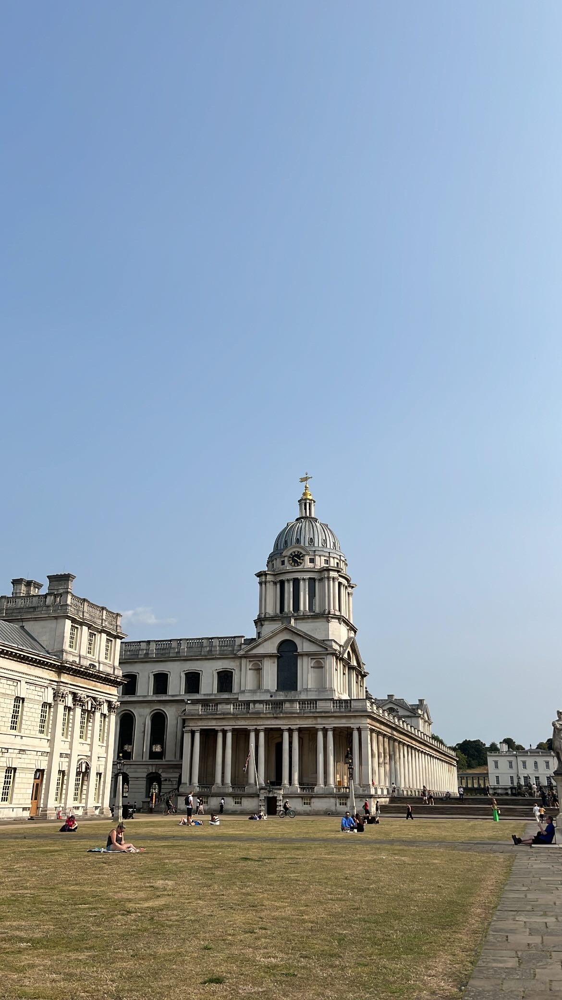
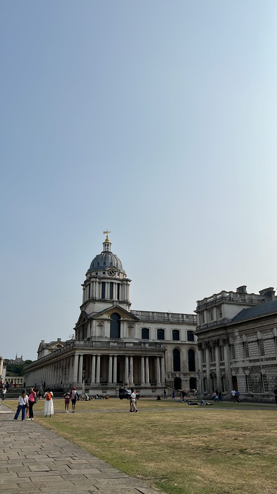
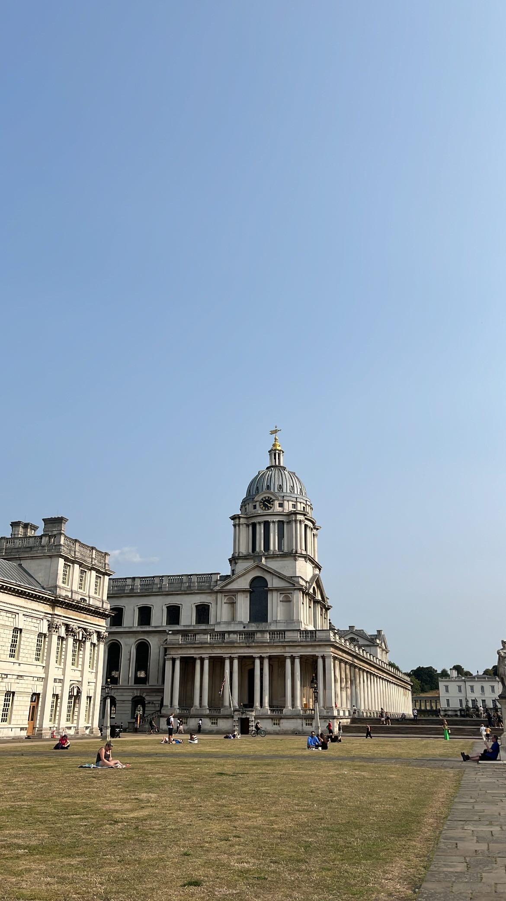
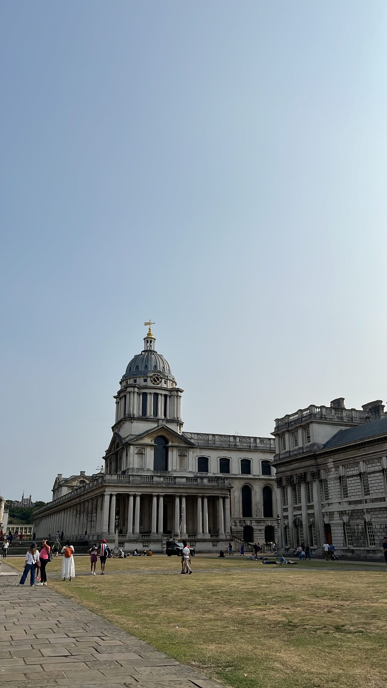
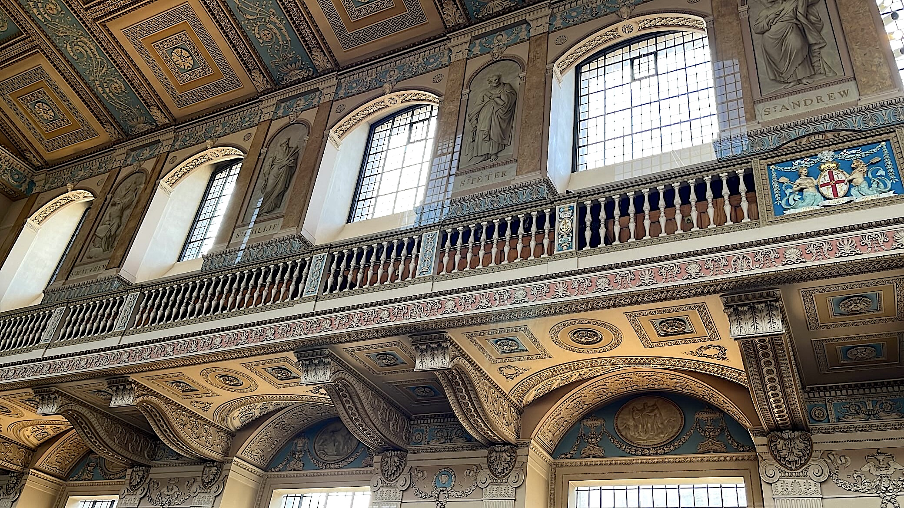

Immerse in a captivating blend of historic grandeur and contemporary charm
Old Royal Naval College
Old Royal Naval College
A remarkable cultural gem nestled in the heart of the Maritime Greenwich UNESCO World Heritage Site. Located right by the River Thames, this destination offers the chance to explore historic architecture without venturing far from the city center. The buildings are stunning, and the joy of wandering through this area is truly beyond words.
 



The Old Royal Naval College was originally designed as the Royal Hospital for Seamen in the 17th century, commissioned by King William and Queen Mary. The four classical buildings that comprise the college today, including the iconic twin domes, were constructed over 300 years ago by two of Britain's leading architects, Sir Christopher Wren and his assistant Nicholas Hawksmoor.
Royal Heritage
The Old Royal Naval College has a rich royal heritage, having been associated with many members of the royal family. If you're looking to learn about the site’s rich cultural and royal history in an engaging way, the guided tour is an ideal option. The guided tour is available for those who purchase a ticket to visit the 'Painted Hall,' which showcases over 3,700 square meters of stunning Baroque walls and ceilings. Aside from the 'Painted Hall,' the other areas are free to explore.
When strolling along the River Thames by the Old Royal Naval College, you'll notice many modernized buildings nearby, creating a captivating blend of ancient and contemporary architecture. You can't help but marvel at the evolution of human ingenuity in design, when enjoying the refreshing sea breeze.
Chapel of St Peter & St Paul
Within the Old Royal Naval College, you'll find the gorgeous Chapel of St Peter & St Paul, which was rebuilt in 1779 after a devastating fire. The interior is breathtaking, with its richly decorated ceiling and walls, all so impeccably preserved that they appear freshly painted. The ceiling features a neo-classical design of squares and octagons, while the walls are adorned with beautiful portraits. The atmosphere inside is serene, offering a tranquil escape where you can easily lose track of time and never want to leave.
Despite its pristine condition, the chapel is open to the public free of charge, welcoming visitors daily from 10am to 5pm as a space for meditation and prayer. Various forms of services are held here, and people from all backgrounds are warmly invited to attend.
The walls and ceiling are adorned with intricate decorations, would be deeply stunned by the craftsmanship from so many decades ago. The level of artistry is beyond words and truly indescribable.
The Old Royal Naval College has been one of the most remarkable places I’ve visited so far. I’m really glad to have spent a day exploring Greenwich, enjoying a delightful afternoon in the area. With Greenwich Market and Greenwich Park nearby, there’s so much to see and experience. It’s truly an intriguing spot to visit in London!